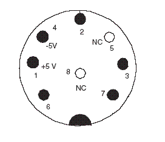

Home |
Lists |
Deathskull Labs |
Museum |
Links
Home |
Lists |
Deathskull Labs |
Museum |
Links
 Home |
Lists |
Deathskull Labs |
Museum |
Links
Home |
Lists |
Deathskull Labs |
Museum |
Links
8-pin female DIN jack at the console.

The eight signals are fed into a 74157 (4-of-8 noninverting decoder/demultiplexer) within the pad. The 74157 splits the eight signals into two sets of four, and the Data Select line determines which set is output on pins 2 through 5.
| Data Select | ||
|---|---|---|
| Pin | High | Low |
| 2 | North | I |
| 3 | East | II |
| 4 | South | Select |
| 5 | West | Run |
Naturally, if the /OE line isn't pulled low, the controller doesn't output anything.
The TurboTap reads five controllers, one at a time. Things start when the console sends a pulse on the /OE line, which resets a counter in the tap. Controller 1 is then read as usual. The transition of the Data Select line from low to high increments the counter, and pad 2 is enabled. This keeps going with each low-to-high transition of the Data Select line enabling the next controller in line.
--- ---
/OE | | | |
(counter reset) --- ------------------------------------ ---
Data Select ------------ -- -- -- -- ------------
(counter increment) | | | | | | | | | |
-- -- -- -- --
Pad/data set read 1A 1B 2A 2B 3A 3B 4A 4B 5A 5B
After controller 5 is read, all the tap outputs are low until the next /OE pulse. This could be how the console detects the presence of the tap, since it's pretty much impossible to smush all four directions at once.
Jay Tilton
05/01/00